Kozagawa, Wakayama: things to do, food and stays
Kozagawa · Wakayama
Kozagawa
Highlighted on the Wakayama map.
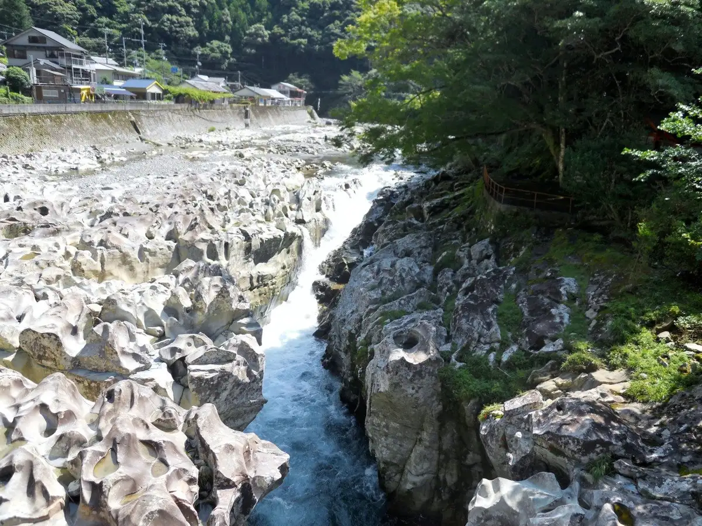
Stay
南紀月の瀬温泉ぼたん荘
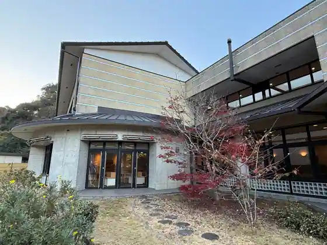
Nanki Gatsu No Se Onsen Botan So
Inn at Nankigatsunose Onsen in Tsukinose, Kozagawa with a large communal bath.
民宿 ＹＡＭＡＢＩＫＯ
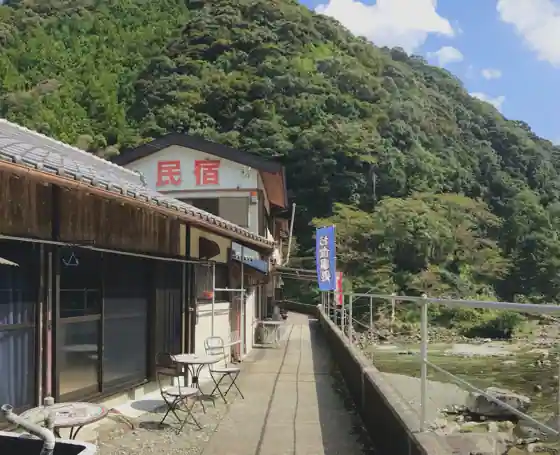
Minshuku YAMABIKO
滝の拝を一望できるお宿 ご縁坐ＯＹＡＤＯ ＾
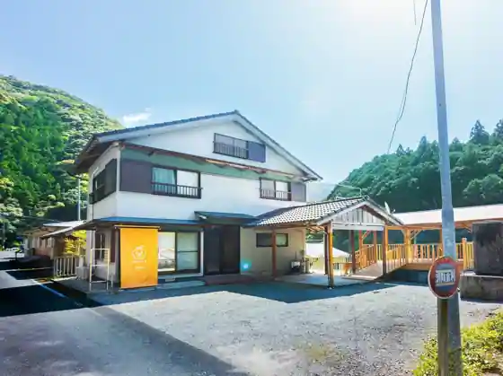
Taki No Hai Wo Ichibo Dekiruo Yado Go Enza OYADO ^
Inn in Ogawa, Kozagawa with parking; 24-minute drive from Koza Station.
やまさき屋旅館
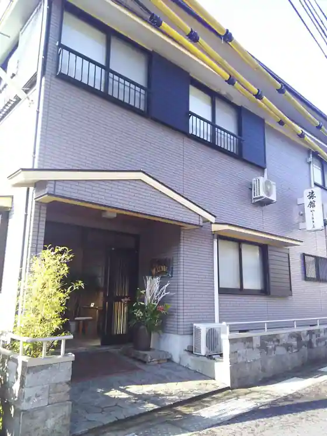
Yamasaki Ya Ryokan
Ryokan inn in Takaike, Kozagawa with parking.
くれあそび とっておきの川遊びキャンプ場 ＾
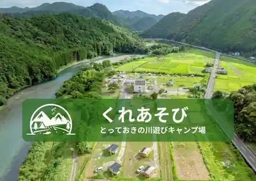
Kureasobi Totteokino Kawa Asobi Kyanpu Ba ^
Dining
道の駅一枚岩 monolith
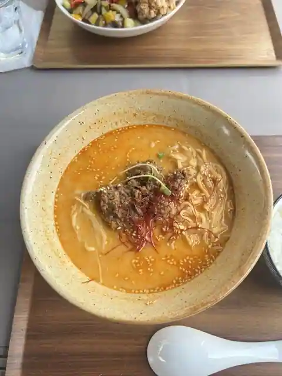
Michi No Eki Ichimaiwa monolith
ぼたん荘
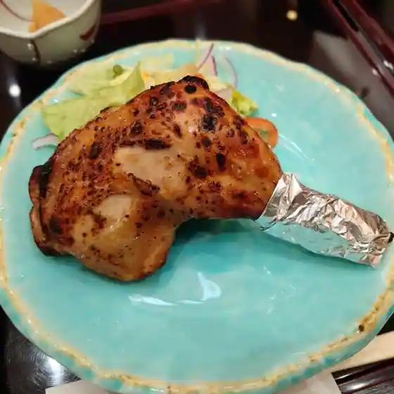
Botan So
道の駅 虫喰岩
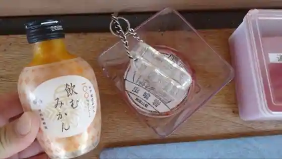
Michi No Eki Mushikui Iwa
道の駅 瀧之拝太郎
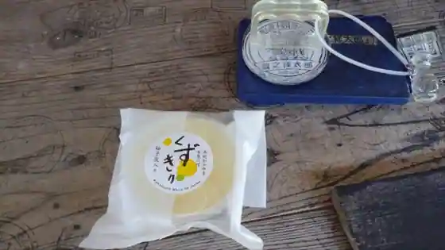
Michi No Eki Takiyuki Hai Taro
やまびこ
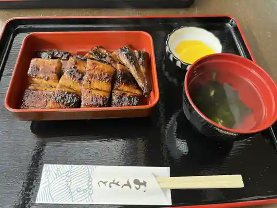
Yamabiko
道の駅 一枚岩
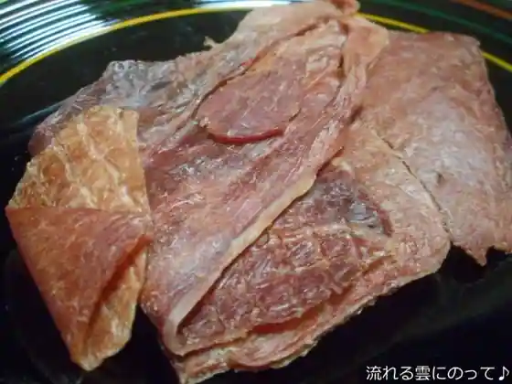
Michi No Eki Ichimaiwa
喫茶note
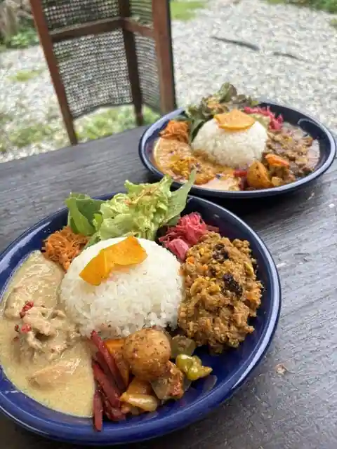
Kissa note
つくし
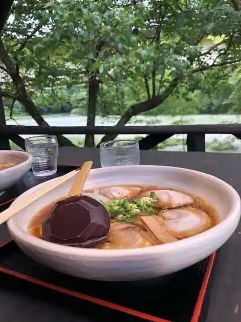
Tsukushi
もりとよ商店
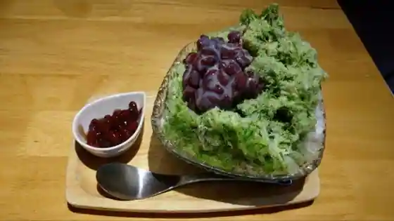
Moritoyo Sho
和
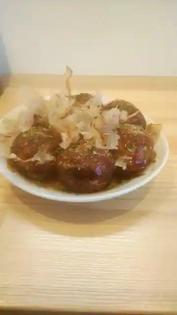
Wa
鮎のたなみや
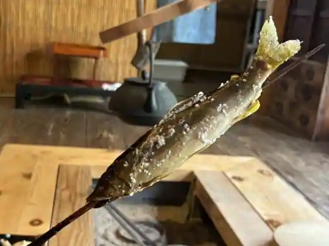
Ayu Notanamiya
Spice Curry ROCKET
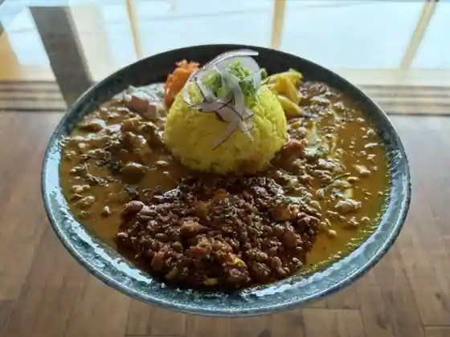
Spice Curry ROCKET
まるや
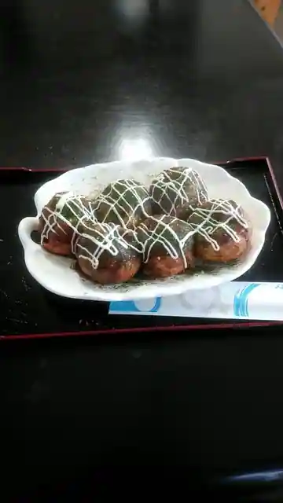
Maruya
センダン
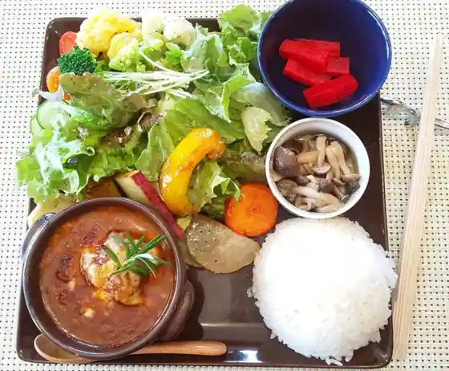
Sendan
Cafeダーチャやまんば
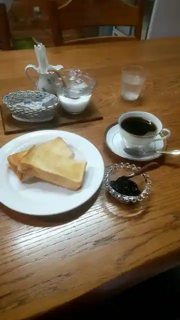
Cafe Dacha Yamanba
さとたく
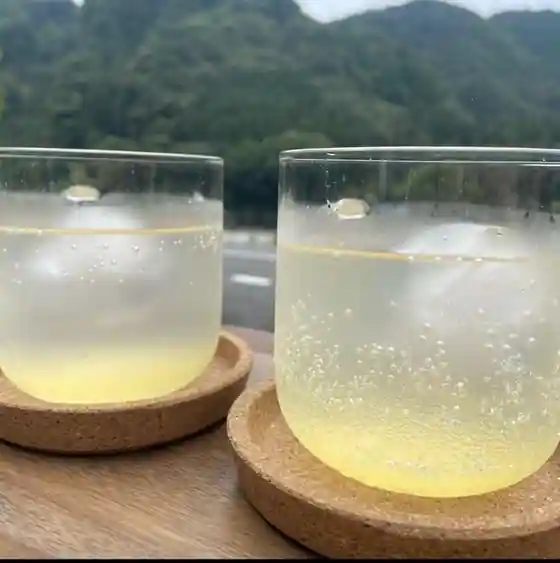
Satotaku
レストハウス ゆずの学校
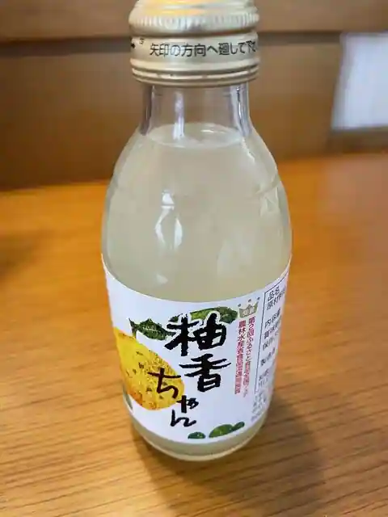
Resuto House Yuzuno Gakko
しろくろ
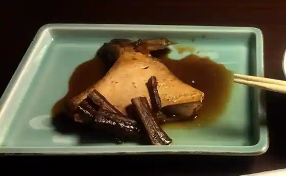
Shirokuro
Sights
Ichimaiiwa
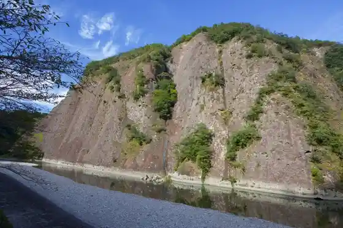
Taki no Hai
Roadside Station Takiyuki Hai Taro no Mise no Te
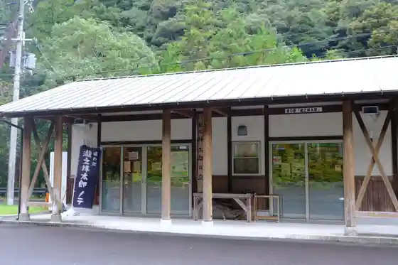
Takaike no Mushikui Iwa
Myojin no Sensui Hashi
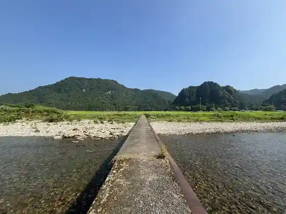